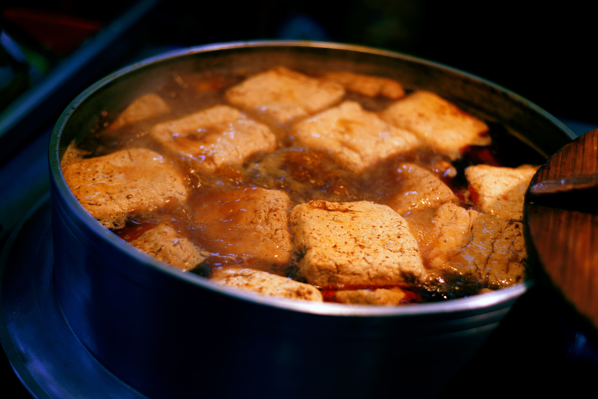

Sammy's Sweet and Fried Tofu

Description
Crispy tofu can be a challenge. If you want to win you're going to want to find some cornstarch.
This dish is packed with flavor from the seasoning pressed into the wet tofu, to the sweet chili sauce and cilantor on top.
Ingredients
- 1 pack of firm to extra-firm tofu
- 3tbs olive oil divided
- 1c of rice, preferably Jasmine
- 1tbs garlic powder
- 1tbs onion powder
- 2tbs cornstarch
- 1 red bell pepper
- 1 small onion
- 2tbs chopped fresh cilantro
- sweet chili sauce to tase
- a sprinkle of sesame seeds
Steps
- Press the tofu for 30 minutes
- Cook rice to your preferences.
- Press seasonings into tofu before cutting 8 one inch slabs.
- Heat 2tbs olive oil in a large nonstick skillet.
- Heat 1tbs olive oil in a cast iron skillet.
- Slice up onion and bell pepper into strips.
- Saute bell pepper and onion in cast iron skillet until chared.
- Fry tofu slabs in nonstick skillet until each side is browned and crispy.
- Set fried tofu on paper towel lined plate.
- Plate and enjoy!
Home